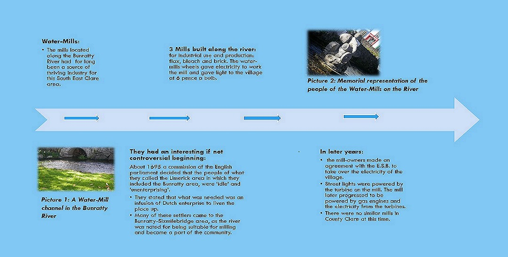

The Bunratty River Watermills and Electricity in the Village

The Industrial History of the River
- There were milling laws from Early Medieval Europe. Not even the German legal codes afforded water-mills such prominence.
- When Ireland came under the influence of Great Britain “soke rights” were introduced.
- This legal obligation meant that tenants on an estate had use for the land-lords mill.
- On many occasions farmers were understandably upset when they were prevented by the land-lords “soke rights” from going to another cheaper mill.
- For the diligent miller, this arrangement ensured a safe income. Sometimes, mills were exempt from tithes.
- Today the present site of the Mills are masked under mature underwood.
- However, references by the farmer who owns the land where the Mills are located: in 1978 stated that there are remains from the Mills including building foundations, a vertical grinding stone and a substantial settling-tank.
- As water transport was the main source of goods movement on the river, it became necessary to build a stone-faced quay above any possible flood level of the river.
- There is also evidence of some ancient dredging along the river. Today, the quay is overgrown, though, most of its stone facing wall remains.
- Such a river was clearly a centre of great activity and industry during these years. A sculpture can be seen in the Bunratty River reminiscent of the Mills and central part it had in people’s lives and the story of the Bunratty River.
Contact Details: Tel. (085) 7340552 email: sineadanneboyce@gmail.com